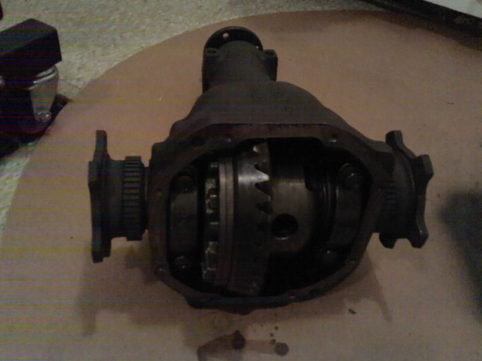

-
Swapped a Z32NA VLSD into our R200 and the driver side half shaft protrudes by 5/16 of an inch. A little creativity is required here.Cha iro
enjoy building it yourself.
if it fails, fuck it.
at least you gave it a whirl. -
there was a post about this, if I recall the issue is the halfshafts hit each other because the case is narrower, I believe the owner shortened the splined section with new snap ring groovesAugustus Maximus wrote: Swapped a Z32NA VLSD into our R200 and the driver side half shaft protrudes by 5/16 of an inch. A little creativity is required here. -
[quote]G-E wrote:there was a post about this, if I recall the issue is the halfshafts hit each other because the case is narrower, I believe the owner shortened the splined section with new snap ring grooves[/quotethm84x0]Originally posted by Augustus Maximus:othm84x0
The case is not narrower the diff cover fits the same, It's the Z31 ring gear which is 5/16 of an inch thicker than the the Z32 one, that shifts the internals over by 5/16 of an inch. The axles cannot hit each other because there is a piece in there that seperates the axles.

Got my halfshaft back from the machinist today. As you can see the problem is solved.
Cha iro
enjoy building it yourself.
if it fails, fuck it.
at least you gave it a whirl. -
1Pint 6FL. OZ guiness
Next up are the axles. Well they're at the machine shop 8) .Cha iro
enjoy building it yourself.
if it fails, fuck it.
at least you gave it a whirl. -
Augustus Maximus wrote: Next up are the axles. Well they're at the machine shop 8) .
Need boot clamps :-D .Cha iro
enjoy building it yourself.
if it fails, fuck it.
at least you gave it a whirl. -
Was you able to just swap the inboard joints from the Z32 to the Z31 axles with no mods? Or did the shaft need shortened?
1986 300ZX Turbo…sold
1990 Skyline GT-R…new money pit
2014 Juke Nismo RS 6-speed…daily -
The left side was shortened by 5/16". With the spacer being on the other side (Z32 is on the left but the Z31 spacer is on the right side, everything in the diff housing is shifted to the left by 5/16 of an inch. Thus the left half shaft will protrude by that amount.NissanEgg wrote: Was you able to just swap the inboard joints from the Z32 to the Z31 axles with no mods? Or did the shaft need shortened?
Cha iro
enjoy building it yourself.
if it fails, fuck it.
at least you gave it a whirl. -
when you guys say shortened… how do you brutha's go about doin that exactly? -
I took it to my machinist and he bolted both halfshafts back to back, threw it on da thingy and ground it down including cutting the c clip groove back in. Looked factory.Careless wrote: when you guys say shortened… how do you brutha's go about doin that exactly?Cha iro
enjoy building it yourself.
if it fails, fuck it.
at least you gave it a whirl. -
[quote]Augustus Maximus wrote:ohhh ok, so they shorten the end of the splined portion is all. I see. thanks!Originally posted by Careless -
For those of you who have done method 5, did you have a machine shop cut a new groove for the snap ring or did you just weld it ? -
not trying to be a jerk, but did you actually think about what a snap ring does before making that post?Daz-E wrote: For those of you who have done method 5, did you have a machine shop cut a new groove for the snap ring or did you just weld it ? -
[quote]Careless wrote:Forgive my ignorance No, explain it to me !Originally posted by Daz-E -
Bye bye snap ring, hello welding with SS rods. Not guaranteed to be super strong, we'll see.Daz-E wrote: For those of you who have done method 5, did you have a machine shop cut a new groove for the snap ring or did you just weld it ?Cha iro
enjoy building it yourself.
if it fails, fuck it.
at least you gave it a whirl. -
So I was searching around and found this http://s77.beta.photobucket.com/user…ential?src=wap . My friend has a entire rear from a 92 q45, could i use this for a vlsd swap for my z31? FLAME ON!!Whats torque?
The definition of torque is; when you wake up in the morning with "morning wood" and are trying to pee. When you push down on your woody, it makes you stand up on your tip toes. That my friend is torque.
-Racinjitter

Copyright © 2006–. All rights reserved. Privacy Policy